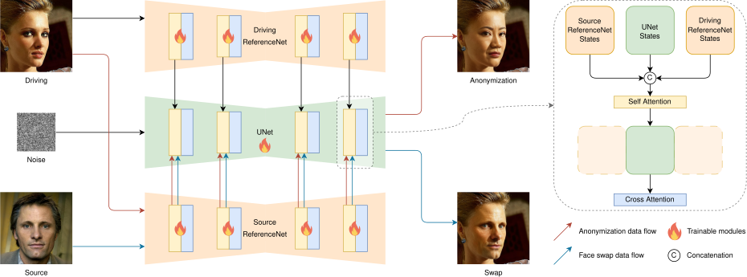
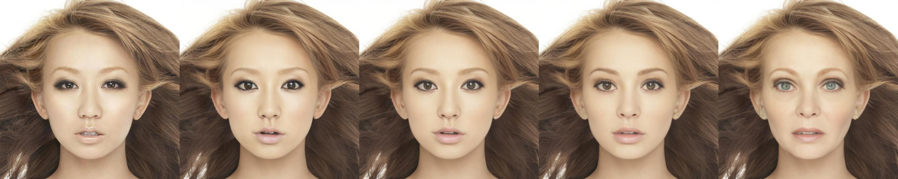
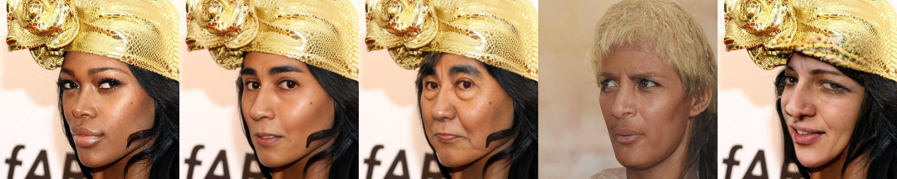
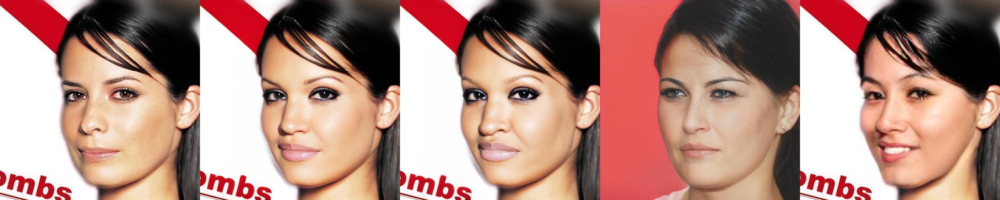
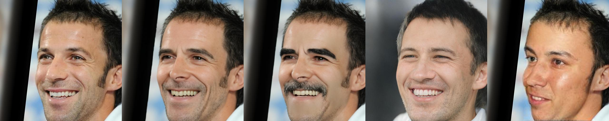
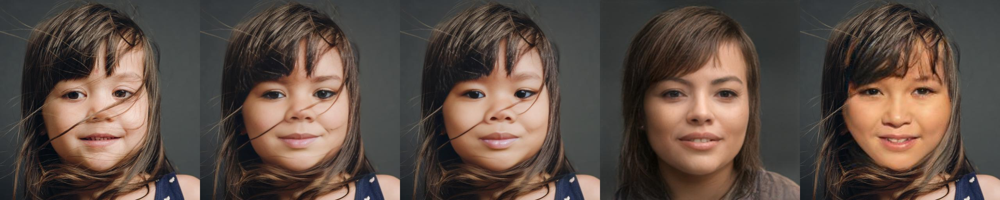
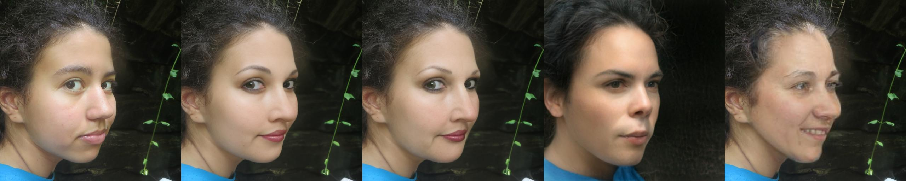
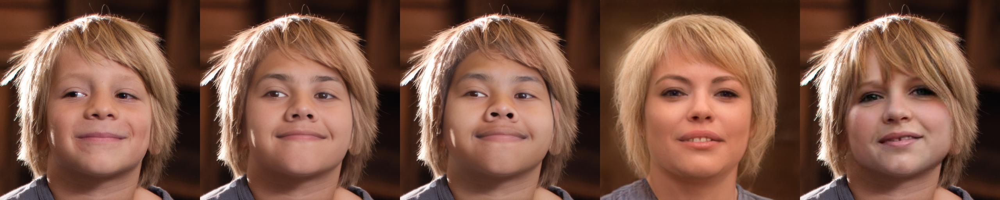
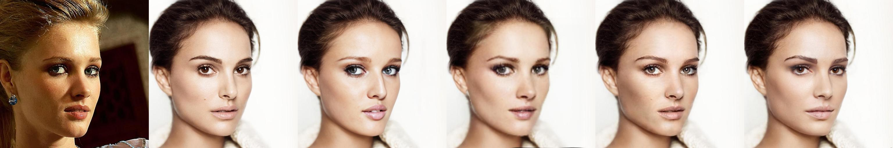

Abstract
Current face anonymization techniques often depend on identity loss calculated by face recognition models, which can be inaccurate and unreliable. Additionally, many methods require supplementary data such as facial landmarks and masks to guide the synthesis process. In contrast, our approach uses diffusion models with only a reconstruction loss, eliminating the need for facial landmarks or masks while still producing images with intricate, fine-grained details.
We validated our results on two public benchmarks through both quantitative and qualitative evaluations. Our model achieves state-of-the-art performance in three key areas: identity anonymization, facial attribute preservation, and image quality. Beyond its primary function of anonymization, our model can also perform face swapping tasks by incorporating an additional facial image as input, demonstrating its versatility and potential for diverse applications.
Method
The architecture treats anonymization as a variant of face swapping. Two ReferenceNet branches inject source and driving cues into a UNet. For anonymization, the same image is fed to both branches, while identity cues in the source stream are suppressed to yield an unknown identity.

Controlling the Anonymization Degree
Increasing the anonymization degree d pushes the generated identity further from the original.

Diverse Anonymization Results
We can also use different integer seed values to produce varied anonymization results from the same input image.
Qualitative Comparison
We compare against DP2 (DeepPrivacy2), FALCO, and RiDDLE on the CelebA-HQ and FFHQ benchmarks.
CelebA-HQ



FFHQ



Face Swapping
Beyond anonymization, our model can perform face swapping tasks by incorporating an additional facial image as input (the source identity).

BibTeX
@InProceedings{Kung_2025_WACV,
author = {Kung, Han-Wei and Varanka, Tuomas and Saha, Sanjay and Sim, Terence and Sebe, Nicu},
title = {Face Anonymization Made Simple},
booktitle = {Proceedings of the Winter Conference on Applications of Computer Vision (WACV)},
month = {February},
year = {2025},
pages = {1040-1050}
}